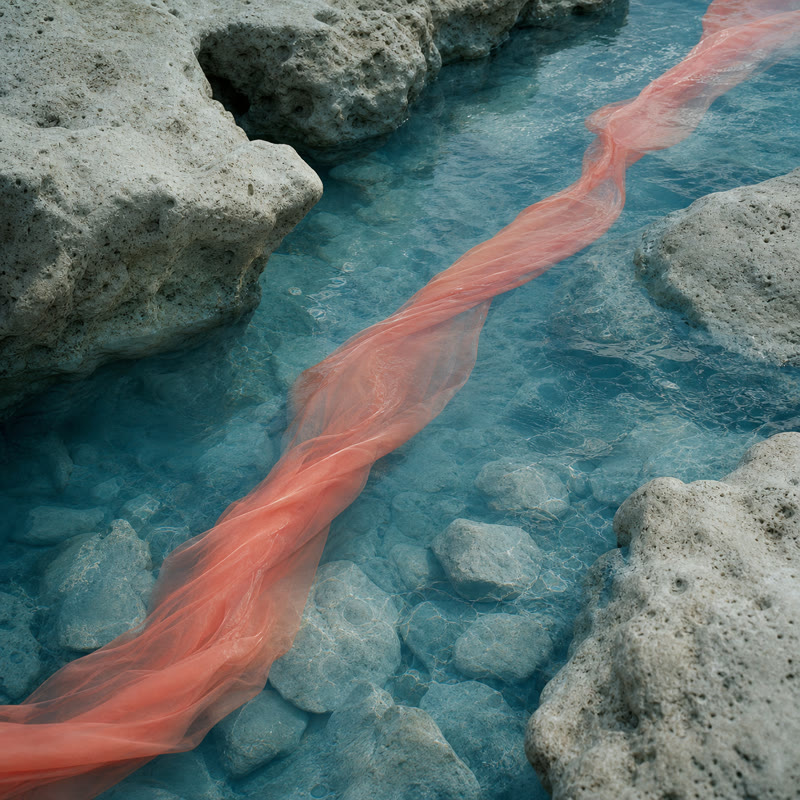
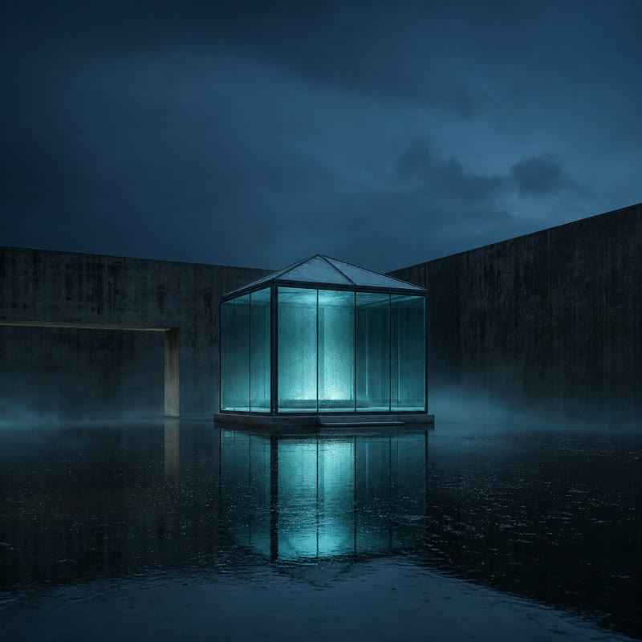
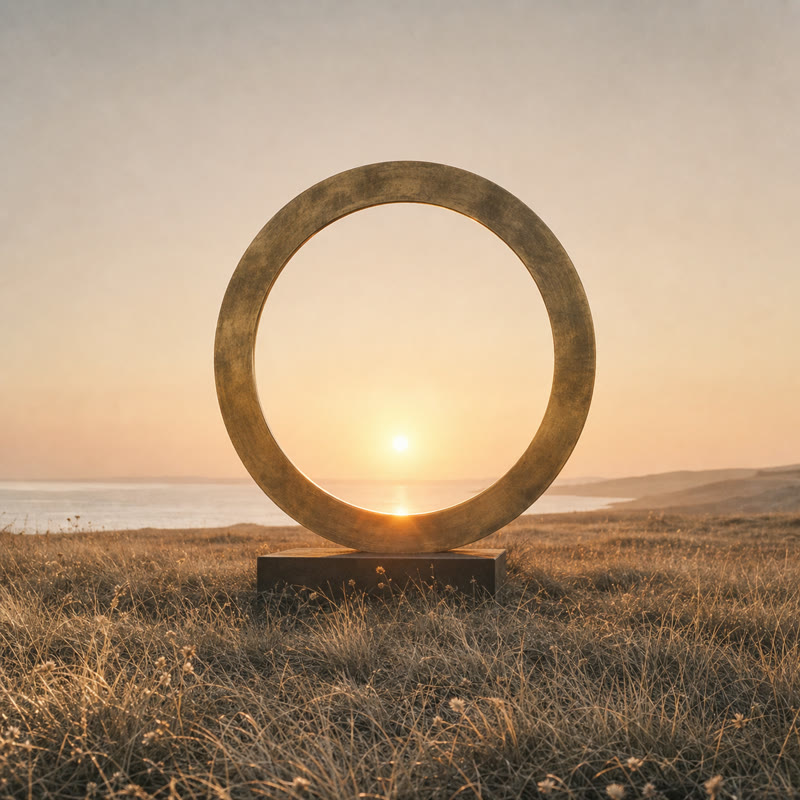

One track wakes as another rests.
Choose a cover · play state follows intentionally
Play

01 / Coast
Playing
Soft Current
Tidal field recording · 09s study

02 / Glass
Playing
Night Glass
Architectural tone · 12s study

03 / Light
Playing
Slow Flare
Open-field resonance · 08s study
Motion · human play-state handoff